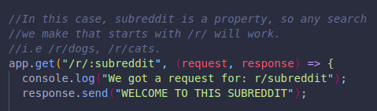
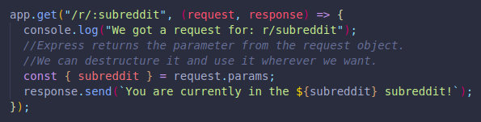
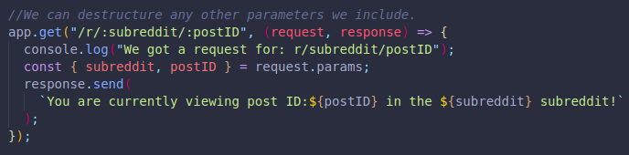
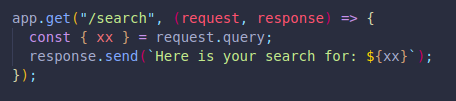

We already know about direct match routing, but sometimes we are looking for patterns for our routes.
We can define a generic pattern to prevent making hundreds of routes.
The parameters we include will not be hardcoded, they will not need to be matched in exact word form, but are instead a pattern or path.
We just check for the pattern, the parameters are variables.
We can destructure the request object to extract the user's search and use it as we like, for this we use request.params. We can save it in a variable, even if we have multiple parameters.
Multiple parameters:
This creates specific webpages depending on the user's request.
The request object has a property called query, made with the query string pairs. (key and value)
We can enter these pairs manually in the URL, or with the parameter option on an API tool.
Upon returning the request object, we will now see the pairs in the object. (EMPTY OBJECT IF NO QUERIES)
If we were to console log the request.query we would see it/them as key value pairs.
We can also extract this object pair and use it on the user's webpage:
Instead of restarting our server each time we make a change, we can do this automatically with Nodemon.
It is a package we can install globally to use in the command line. It will watch for changes and restart our server when changes are detected.
It can also be installed locally on each project, however, we will not have access to the nodemon command.
nodemon -v gives us the version.
Instead of running our index or other files with: node index.js, we will run nodemon index.js.
We will automatically receive a command line message saying that the server was restarted upon saving any changes in our server file!
NO NEED FOR Ctrl c + node index.js ANYMORE!!!